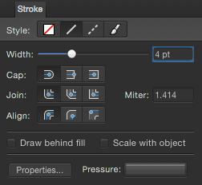

О панели «Обводка»
Вокруг ограничительной рамки любого объекта можно создать обводку с различными настраиваемыми свойствами (например, ширина, цвет, непрозрачность, стиль линии и т. д.).

На панели расположены указанные ниже элементы управления.
- Стиль: выберите кнопку стиля линии, чтобы изменить ее начертание. Доступны следующие варианты: «Нет», «Сплошная линия», «Пунктирная линия» и «Текстурная линия» соответственно. Последний параметр предусматривает применение текущей кисти, выбранной на панели «Кисти», к обводке.
- Ширина: перетащите ползунок для изменения ширины (толщины) выбранной линии.
- Концы: выберите одну из кнопок стиля концов (скругленные, срезанные или квадратные), чтобы изменить контур конечной части линии.
- Соединение: выберите одну из кнопок стиля соединения (скругленное, скошенное или угловое), чтобы определить контур угла пересечения двух линий, например угол контура фигуры.
- Угол: используется для установки длины вытягивания угловых соединений при создании либо острого, либо тупого углов.
- Выравнивание: выберите одну из кнопок выравнивания, чтобы определить место размещения обводки относительно края объекта (по центру, по внутреннему или внешнему краю).
- Рисовать позади заливки: установите флажок в этом поле, чтобы скрыть внутреннюю половину контура объекта за замкнутой фигурой; может пригодиться в случае очень маленьких объектов или при сжатии оконтуренного текста. При снятии флажка линия будет всегда отображаться полностью.
- Масштабировать относительно объекта: установите флажок в этом поле, чтобы совместно масштабировать линию и фигуру при изменении размера замкнутой фигуры. При снятии флажка ширина линии будет оставаться постоянной.
- Свойства: нажмите, чтобы изменить кисть, используемую при выборе стиля «Текстурная линия», с помощью диалогового окна «Кисть».
- Нажим: используется для отображения текущего профиля нажима после применения начертания линии или мазка кисти. После выбора профиля пользователь может отредактировать его и сохранить для использования в будущем.
- Пунктир: если выбран стиль «Пунктирная линия», с помощью этого параметра можно выбрать дизайн пунктирной линии (подробные сведения см. ниже).
- Фаза: если выбран стиль «Пунктирная линия», с помощью этого параметра можно выбрать начальную точку для прорисовки дизайна пунктирной линии (подробные сведения см. ниже).
О стиле «Пунктирная линия»
При использовании стиля «Пунктирная линия» в нижней части панели появляется сетка со значениями пунктира, которые определяют шаблон пунктирной линии с помощью двух числовых пар.
- Первые два значения используются для установки размера начального пунктира и следующего за ним пробела.
- Третье и четвертое значения (если установлены) используются для создания более сложного шаблона пунктирной линии и установки другого размера для чередующихся пунктиров и пробелов.
Все значения основаны на текущей ширине линии (например, значение 2 соответствует удвоенной ширине линии).

Значение в поле Фаза позволяет «сдвинуть» пунктирную линию вдоль обводки и начать прорисовку дизайна в другой точке последовательности стиля. Это может повлиять на способ отображения пунктирных линий для замкнутых фигур (см. ниже).